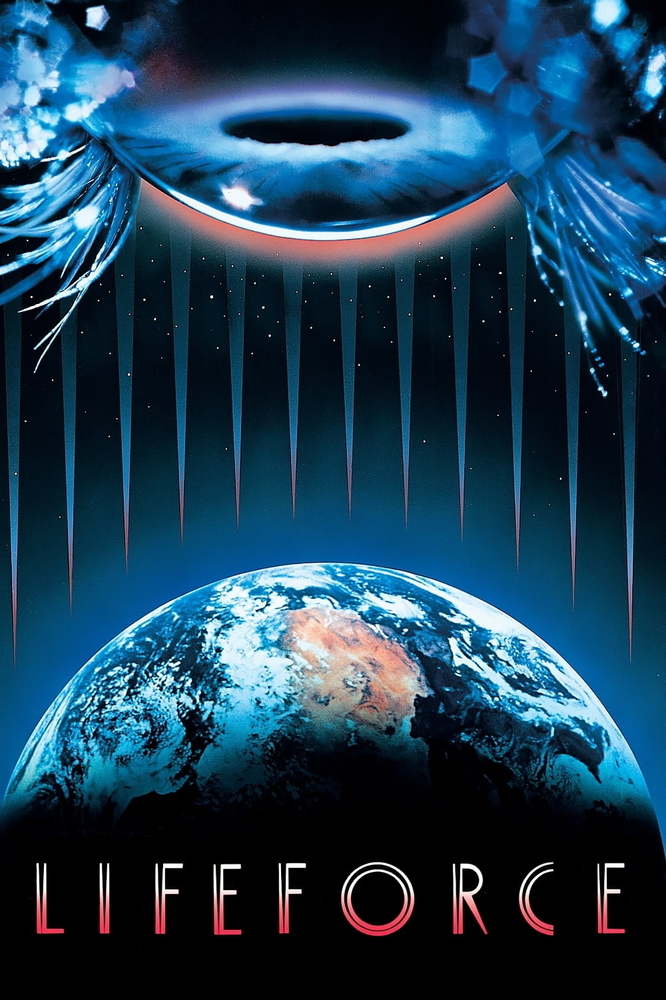

Мировая премьера: 21 июня 1985
Слоган: В мгновение ока начинается ужас.
Сюжет: Экспедиция по исследованию кометы Галлея сталкивается с невероятным открытием – дрейфующим космическим кораблём, на борту которого находятся гуманоиды в состоянии анабиоза. После роковой встречи, в которой погибает почти весь экипаж, пришельцы прибывают на Землю, где их соблазнительная предводительница начинает высасывать жизненные силы из всех, кто встречается ей на пути. Её жертвы, в свою очередь, продолжают этот цикл, и вскоре вся планета оказывается в смертельной опасности. Полковник Кейн понимает, что должен найти предводительницу, и заручается помощью Карлсена – единственного выжившего члена экипажа. Но, разыскивая вампиршу, Карлсен сталкивается с мучительной дилеммой: убить прекрасную инопланетянку... или самому стать очередной жертвой её рокового обаяния?
Режиссёр: Тоб Хупер
В основе: Роман Колина Уилсона "Космические вампиры" (Великобритания, 1976)
В ролях: Стив Рейлсбэк, Питер Фёрт, Фрэнк Финлей
| Стив Рейлсбэк | Полковник Том Карлсен |
| Питер Фёрт | Полковник Колин Кейн |
| Фрэнк Финлей | Доктор Ганс Фаллада |
| Майкл Гозард | Доктор Буковски |
| Матильда Мэй | Девушка из космоса |
| Патрик Стюарт | Доктор Армстронг |
| Николас Болл | Роджер Дербридж |
| Обри Моррис | Сэр Перси Хеслтайн |
| Джон Хэллам | Лэмсон |
| Нэнси Пол | Эллен Дональдсон |
| Джон Киган | Охранник |
Бюджет: $ 25 млн.
Кассовые сборы в США: $ 12 млн.
Кассовые сборы в мире: $ 12 млн.
Продолжительность: 1 ч. 53 мин.
Рейтинг: 6.1